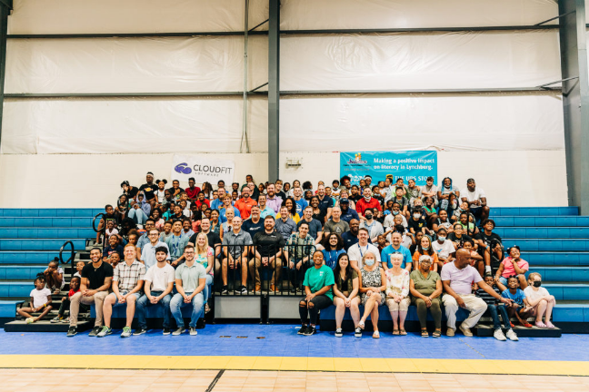

Regional mission, regional outcomes
We align with local schools, colleges, and employers to strengthen the talent pipeline for the region, not for a single company.
JobFit is focused on teaching high school students, college students, and career changers the trade of IT. We use a person's desire to learn, willingness to work hard, and their aptitude of learning technology to equip them with job-ready skills.
JobFit was founded to bridge education and employment through practical, local career pathways that serve students and career changers first.
We align with local schools, colleges, and employers to strengthen the talent pipeline for the region, not for a single company.
Students develop confidence, career clarity, and practical skills before and during internship opportunities.
JobFit internships are coordinated by JobFit and delivered across multiple host organizations as the network grows.
In partnership with local academies and colleges, students explore cybersecurity, software, IT support, and design to discover where they fit best.
JobFit delivers mentored internships with leading technology employers, nonprofit teams, and civic partners, including CloudFit Software.
Capstone cohorts collaborate on scoped projects with industry and community stakeholders to build portfolio-level outcomes.
JobFit partners with schools, workforce organizations, and employers that each contribute distinct mentorship, project access, and learning opportunities.
Employer partner supporting select internship tracks and mentorship.
Academic partner preparing students for credential and career pathways.
Capstone collaboration and talent development support.
Youth-focused camp and cybersecurity learning partner.
"Interning at CloudFit let me test whether software engineering was right for me. Working with C# and TypeScript gave me real-world context and confirmed this is the career I want."
"Vulnerability scanning, scripting, and incident response gave me practical cybersecurity experience. Teamwork, communication, and inclusivity were major parts of what made this internship so valuable."
"I came from public health with limited tech background, and this internship gave me hands-on experience plus mentorship that changed my career direction and continued into full-time work."
How coordinated school-to-work pathways build momentum for learners.

Fifteen participants completed projects spanning support, design, and security.

A growing partner network increases placement options across the region.